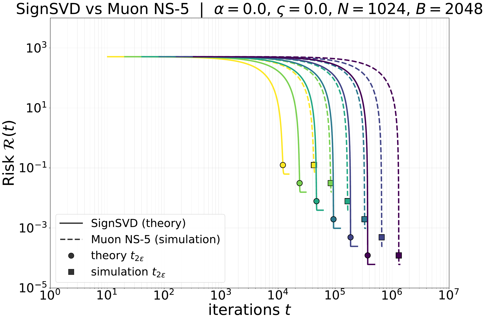
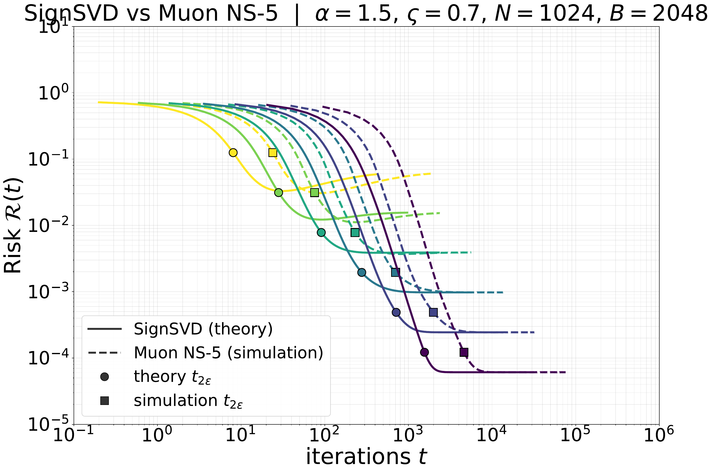
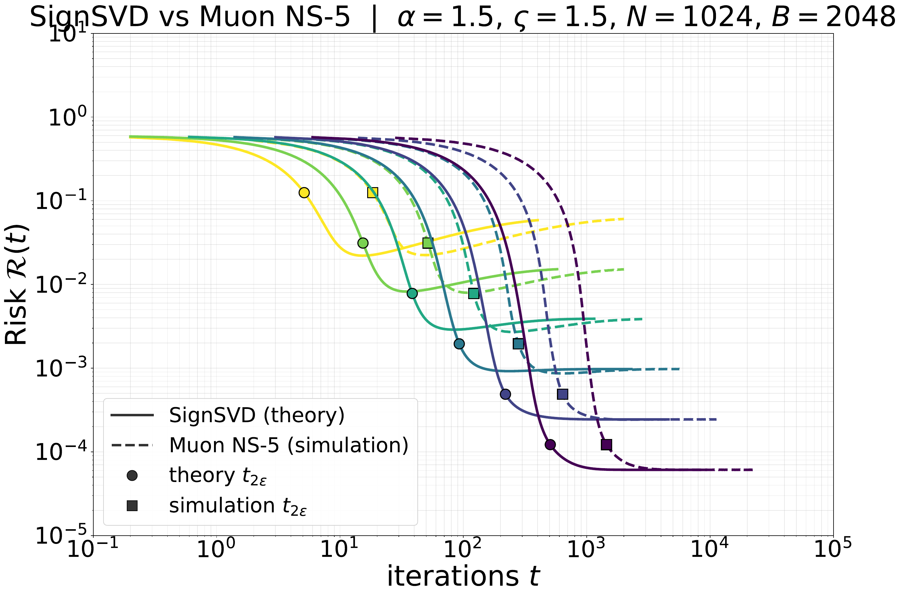
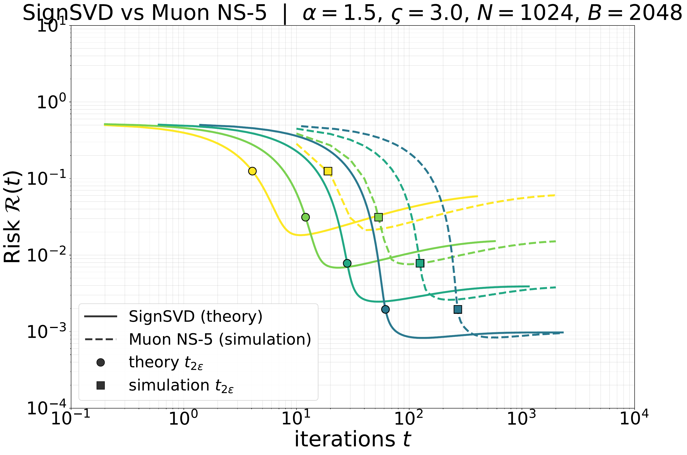
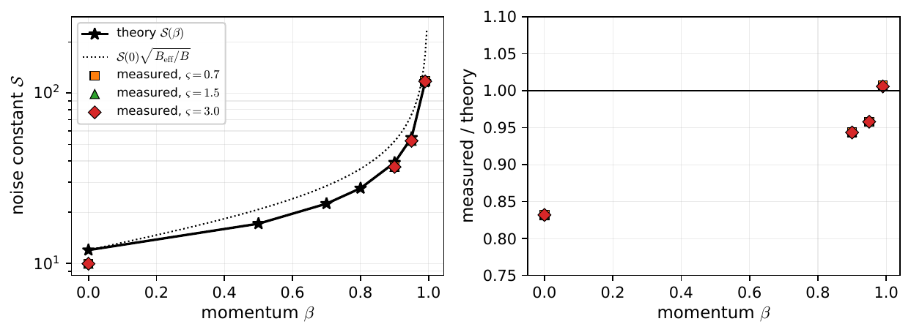
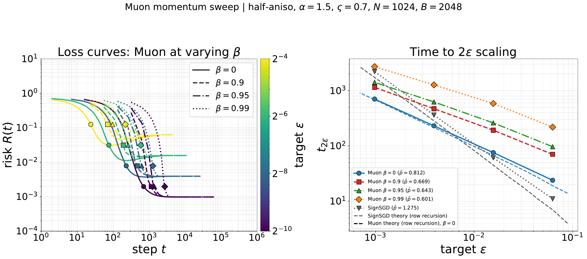
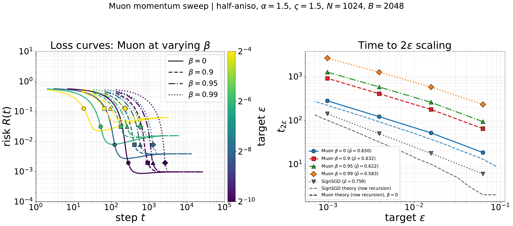
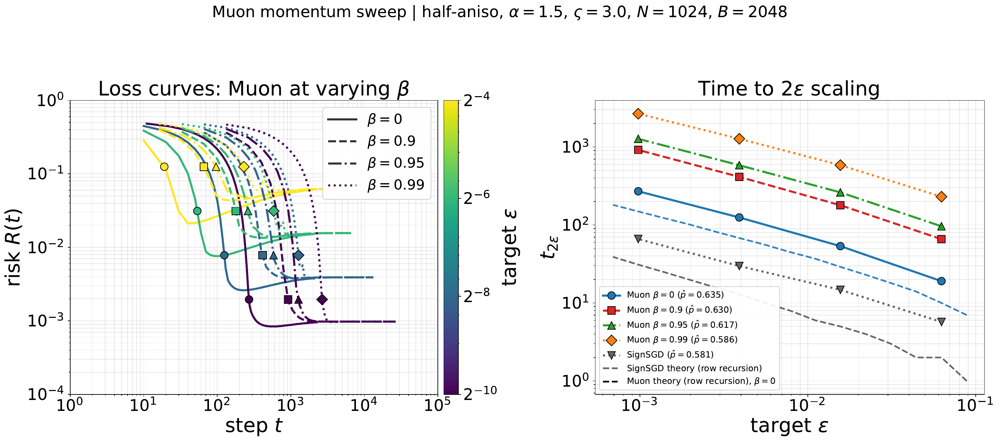
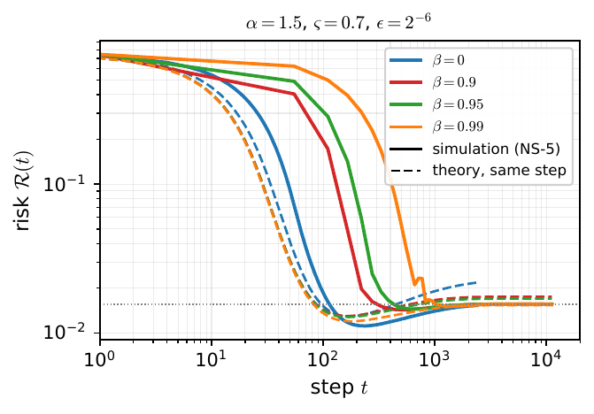

SM Momentum in Muon: theory against an ablation
This appendix compares the momentum theory of the appendix with simulations of Muon at \(\bmom\in\{0,0.9,0.95,0.99\}\) on the half-anisotropic power-law problem at \(B=2N\). The theory makes two predictions in this oversampled regime. The noise floor changes with \(\bmom\) through an explicit noise constant \(\mathcal S(\bmom)\), which we compute and which matches the measurements to within \(1\)–\(6\%\) with momentum (Sec. SM.2). The \(\epsilon\)-exponent of the time to reach a target does not change with \(\bmom\); the time constants with momentum are outside the theory at these settings, because the buffer is dominated by the signal early in the descent (Sec. SM.3).
Algorithms. Both updates are run on the half-anisotropic problem of Sec. 4, with \(\Sigmain=\Id\) and \(\Sigmaout=U\diag(\mu)U^\T\) for a Haar-random orthogonal \(U\) and \(\mu_i=i^{-\alpha}\). Without momentum the update is \(\Delta_{t+1}=\Delta_t-\eta\,\mathrm{orthog}(G_t)\), where \(\mathrm{orthog}\) is five Newton–Schulz steps with the coefficients of [32]. With momentum a heavy-ball buffer \(H_{t+1}=\bmom H_t+G_t\) is orthogonalized instead, as in
optax.contrib.scale\_by\_muon with nesterov=False [20]. The heavy-ball buffer is the normalized average \(M_t\) of Definition SA.2 divided by \(1-\bmom\) (Remark SA.2); the polar factor, and Newton–Schulz applied to a Frobenius-normalized input, do not see this factor, so the simulated algorithm is the algorithm of the appendix at zero ridge, up to the Newton–Schulz approximation.Setup. We use the matched-floor protocol of Sec. 5: for each target \(\epsilon\) the step is \(\eta^\star=2\sqrt\epsilon/\mathcal S\), which puts the risk floor at \(\epsilon\). In the simulations \(\mathcal S=\mathcal S_{\rm eff}\) is calibrated per \((\bmom,\texp)\) from a short probe at \(\epsilon=0.25\), as \(2\sqrt{\cR_\infty}/\eta\) with \(\cR_\infty\) the measured plateau. The problems are \(\alpha=1.5\) with \(\texp\in\{0.7,1.5,3.0\}\), one in each \(\epsilon\)-exponent regime of Thm. 5.1; \(N=1024\), \(B=2048\), \(16\) trials, and \(\epsilon\in\{2^{-4},2^{-6},2^{-8},2^{-10}\}\). SignSGD at \(\bmom=0\) is run for reference. Fig. S10 first compares Muon at \(\bmom=0\) with the deterministic model of Sec. 5 over a wider range of \(\epsilon\).




SM.1 What the theory predicts at \(B=2N\)
Drift. At \(B=2N\) the small parameter of Theorem SH.1 is \(\epsilon_{\rm os}=3(1-\bmom^2)N/B=1.5(1-\bmom^2)\), which equals \(0.29\), \(0.15\) and \(0.03\) at \(\bmom=0.9\), \(0.95\), \(0.99\). In this window the theorem gives
\[
\mathfrak d_i=\vartheta_i\sqrt{\frac{B_{\rm eff}}N}\,\mathfrak d^{\rm os}(\mu_i),\qquad
\vartheta_i\in\big[1-\epsilon_{\rm os},(1-\epsilon_{\rm os})^{-1}\big],
\]
with a profile \(\mathfrak d^{\rm os}\) that does not depend on \(\bmom\): momentum enters the drift only through the effective batch \(B_{\rm eff}=B(1+\bmom)/(1-\bmom)\). We evaluate the zero-ridge drift kernel of each row exactly ((SC.4), single integral over the branch). Relative to \(\sqrt{B_{\rm eff}/B}\) times the drift at \(\bmom=0\), the ratio lies in \([1.00,1.19]\), \([1.00,1.14]\) and \([0.95,1.02]\) over all rows at \(\bmom=0.9\), \(0.95\), \(0.99\).
Volatility. The zero-ridge row volatility is explicit at a finite spectrum: it is \(1\) plus twice the sum over lags of double integrals of the two-time row kernel (Proposition SG.4 and Proposition SG.3), and without momentum it equals \(1\), since the polar factor of a full-rank square gradient is orthogonal. With momentum the head rows have \(\mathfrak v_1=19.0\), \(38.9\), \(198.2\), essentially the factor \(B_{\rm eff}/B=19\), \(39\), \(199\) of a linear buffer, while the tail rows have less, \(\mathfrak v_{1000}=9.2\), \(16.7\), \(56.7\). Our code reproduces the isotropic constants of Fig. 4 to \(0.2\%\) when all eigenvalues are equal.
Noise constant. The noise constant of the matched-floor protocol is ((16))
\[
\mathcal S(\bmom)=\sum_{i=1}^N\frac{\mu_i\,\mathfrak v_i}{2\,\mathfrak d_i},
\]
and it does not depend on the target exponent \(\texp\), because neither coefficient does. The theory values are in Table S2.
SM.2 The noise floor
| \(\bmom=0\) | \(\bmom=0.9\) | \(\bmom=0.95\) | \(\bmom=0.99\) | |
| theory \(\mathcal S(\bmom)\) | \(11.99\) | \(39.10\) | \(54.79\) | \(116.56\) |
| measured \(\mathcal S_{\rm eff}\), \(\texp=0.7\) | \(9.97\) | \(36.89\) | \(52.48\) | \(117.39\) |
| measured \(\mathcal S_{\rm eff}\), \(\texp=1.5\) | \(9.97\) | \(36.91\) | \(52.49\) | \(117.38\) |
| measured \(\mathcal S_{\rm eff}\), \(\texp=3.0\) | \(9.97\) | \(36.89\) | \(52.49\) | \(117.22\) |
| measured / theory | \(0.83\) | \(0.94\) | \(0.96\) | \(1.01\) |

The theory predicts the noise floor with momentum (Table S2, Fig. S11). For \(\bmom\in\{0.9,0.95,0.99\}\) the measured noise constants are within \(6\%\), \(4\%\) and \(1\%\) of \(\mathcal S(\bmom)\), and, as predicted, they do not depend on \(\texp\). The floor at a given step is \((\eta\,\mathcal S(\bmom)/2)^2\), so the noise-floor adjustment for momentum is the ratio \(\mathcal S(\bmom)/\mathcal S(0)\), equal to \(3.26\), \(4.57\) and \(9.72\). It is smaller than the plain rescaling \(\sqrt{B_{\rm eff}/B}=4.36\), \(6.24\), \(14.1\) by the factors \(0.75\), \(0.73\) and \(0.69\): the drift grows by \(\sqrt{B_{\rm eff}/B}\) on every row, but the volatility of the tail rows grows by less than \(B_{\rm eff}/B\), and the tail rows dominate \(\mathcal S\).
Without momentum the measured constant is \(17\%\) below the theory. Here the gradient is a square matrix with aspect ratio \(N/B=1/2\) and spread-out singular values, and five Newton–Schulz steps differ from the exact polar factor by the spread of their outputs, the effect identified in Appendix SL at \(\bmom=0\). With momentum the buffer averages many batches, its singular values are concentrated, and the difference is small. The empirical prefactor \(\hat\rho\approx0.84\) of an earlier version of this appendix, defined relative to the measured \(\bmom=0\) value, combines this \(17\%\) with the factors \(0.69\)–\(0.75\) above.
SM.3 Time to \(\epsilon\)



The exponent. The \(\epsilon\)-exponent of the time to reach a target is set by the power-law orders in \(i\) of \(\mathfrak d_i\) and \(\mathfrak v_i\) (Thm. 5.1). Momentum multiplies the drift of every row by \(\sqrt{B_{\rm eff}/B}\) up to a bounded factor, and the volatility by factors bounded above and below uniformly in \(i\) (between \(9.1\) and \(19\) at \(\bmom=0.9\), between \(55\) and \(198\) at \(\bmom=0.99\)), so it does not change these orders, and the exponent is the same for every \(\bmom\). The measured slopes (Figs. S12–S14, right panels) agree: they lie within \(10\)–\(30\%\) of the SignSVD exponent for every \(\bmom\), do not depend systematically on \(\bmom\), and show the same finite-\(N\) deviation already present at \(\bmom=0\).
The time constants. Without momentum the theory follows the simulations (blue dashed lines in the right panels: the row recursion with the coefficients of Sec. SM.1 at its own matched step): within \(0.8\)–\(1.06\) at \(\texp=0.7\) and \(0.7\)–\(0.84\) at \(\texp=1.5\), and about \(0.55\) at \(\texp=3.0\), where the gap includes the Newton–Schulz offset of Sec. SM.2. With momentum the theory predicts a curve close to the \(\bmom=0\) one, while the simulations are slower by large factors (\(2\)–\(8\) at \(\bmom=0.9\), \(5\)–\(30\) at \(\bmom=0.99\)), so the panels show no theory line for \(\bmom>0\). Fig. S15 shows the gap on the risk itself.

Why the momentum transient is outside the theory. The gain of the drift by \(\sqrt{B_{\rm eff}/B}\) (Sec. SM.1) is a linear response: the polar factor of a buffer that is mostly noise responds linearly to the signal in it, and averaging more batches raises the signal-to-noise ratio. It requires the noise to dominate the buffer (Remark SH.1, which asks for \(B_{\rm eff}\ll N^2\) for a spread-out error). Here \(B_{\rm eff}/N^2=0.04\) at \(\bmom=0.9\) and \(0.39\) at \(\bmom=0.99\), and the initial error is concentrated: at \(\texp=0.7\) the top mode carries about two thirds of the weighted risk. Early in the descent the buffer is therefore close to its signal \(\Sigmaout\Dt\), whose polar factor has bounded entries, and the extra signal-to-noise ratio buys no extra speed. Near the floor the error is small and spread out, the noise dominates again, and the linear response holds; this is why the noise floor and the exponent are predicted.
| theory | fresh buffer | momentum buffer | Muon run | |||
| polar | NS-5 | polar | NS-5 | |||
| \(\bmom=0\) | \(58\) | \(68\) | \(71\) | — | — | \(76\) |
| \(\bmom=0.9\) | \(51\) | \(120\) | \(160\) | \(141\) | \(179\) | \(220\) |
| \(\bmom=0.99\) | \(50\) | \(357\) | \(482\) | \(1039\) | \(787\) | \(605\) |
A controlled comparison separates this effect from two others (Table S3). A Gaussian model of the gradient reproduces the simulations to within about \(30\%\). In it, a fresh buffer at the current state with the exact polar factor, which has neither a stale buffer nor Newton–Schulz, is already \(2.4\) and \(7\) times slower than the theory at \(\bmom=0.9\) and \(0.99\); this is the loss of linear response. Replacing the exact polar factor by five Newton–Schulz steps slows the descent by a further \(1.3\)–\(1.35\): the effective ridge \(\varrho_X\norm{M_t}_\F^2\) of Appendix SL grows with the signal in \(\norm{M_t}_\F\) and suppresses the noise directions through which the tail rows descend. Using the actual momentum buffer, whose signal lags the state, slows it by \(1.1\)–\(1.2\) at \(\bmom=0.9\) and by \(1.6\)–\(2.9\) at \(\bmom=0.99\); with this stale buffer Newton–Schulz is faster than the exact polar factor, because its ridge down-weights the old directions, as in Appendix SL.
Takeaway. At \(B=2N\) the theory predicts how momentum changes the noise floor of Muon, through the explicit noise constant \(\mathcal S(\bmom)\), to within a few percent, and it predicts that the \(\epsilon\)-exponent of the time to target does not change, as observed. The transient with momentum is outside the theory at these settings: the buffer is signal-dominated early in the descent, so the linear-response gain of the drift is not realized, and the stale buffer and the Newton–Schulz ridge add smaller slowdowns. At matched floor, momentum therefore costs time in this ablation.